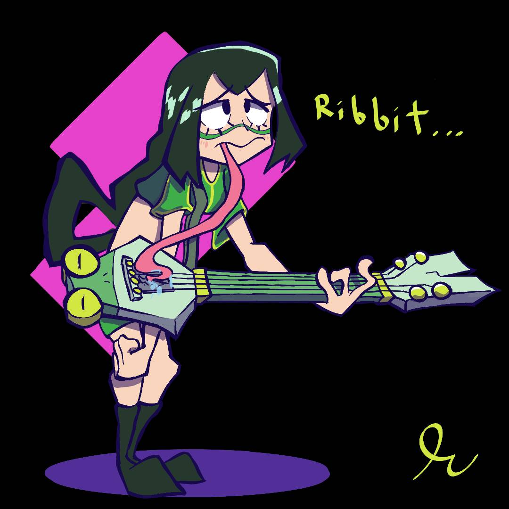

One of the things I love to do most is to draw! Everyday and every chance I get, I will drawing anything, even if its a simple doodle. Drawing has been a major pastime for me since middle school and it has consumed most of my free time since then. I enjoy drawing a lot because i enjoy hobbies where I can create things so it serves as an outlet for me to express my creativity and ideas to draw into existence. Aside from that, I also find it therapeutic because drawing is a very passive pasttime, so it tends to relax me, especially during a calm night within the comfort of my own house. I have a predilection for drawing cartoons and I look forward to implementing my own art skills into Computer Science!
Here is a few artpieces from my art gallery!
Another thing that I have recently started to get into is learning how to play the electric guitar! I've never been talented at playing music, but I still have a lot of fun learning how to play my favorite songs!

Source: PIRO4D. “A 3D Model of a Guitar Created by User ‘PIRO4D’ on Pixabay.com.” Pixabay.com, 9 Nov. 2017, pixabay.com/photos/manhattan-new-york-city-407703/.